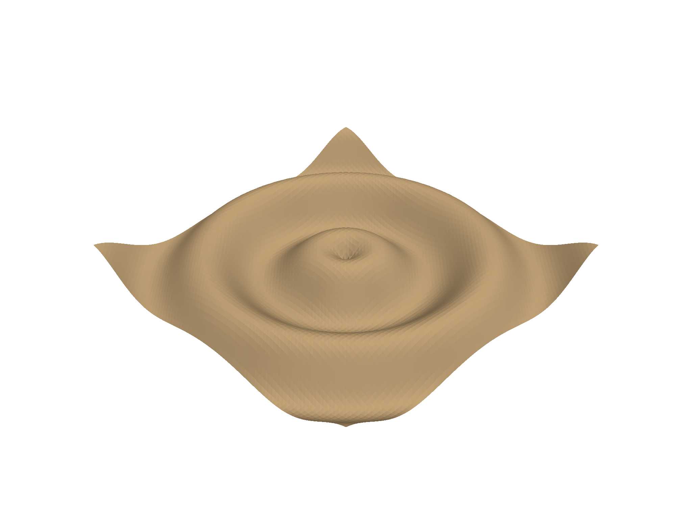
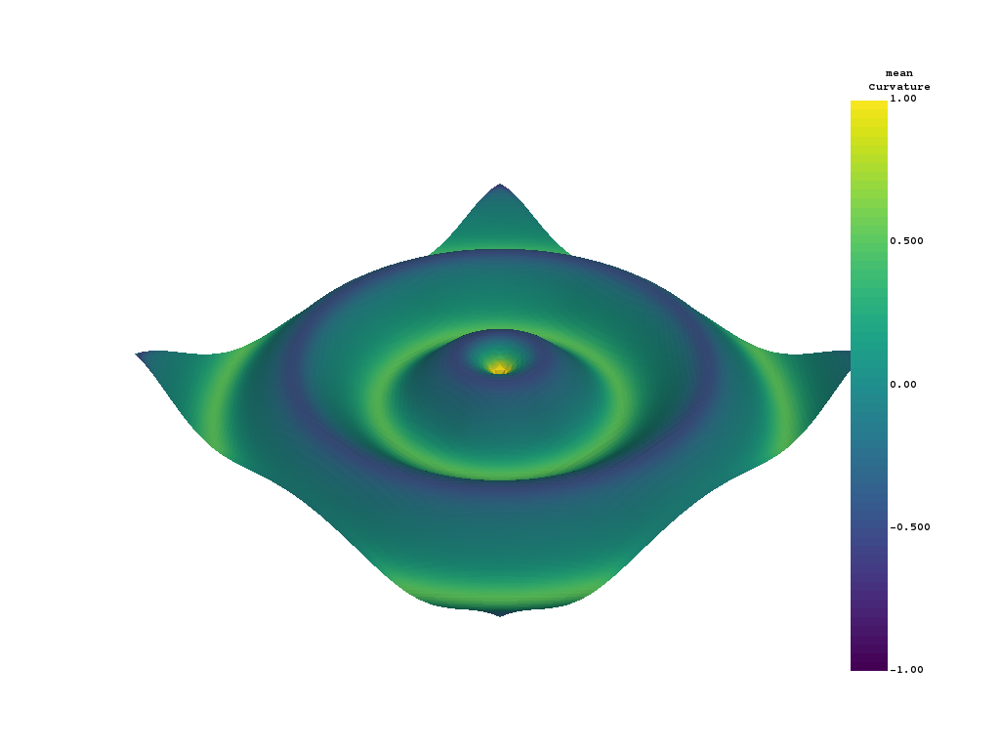

Note
Click here to download the full example code
Creating a Structured Surface¶
Create a StructuredGrid surface from NumPy arrays
# sphinx_gallery_thumbnail_number = 2
import vtki
import numpy as np
Create a simple meshgrid using NumPy
# Make data
x = np.arange(-10, 10, 0.25)
y = np.arange(-10, 10, 0.25)
x, y = np.meshgrid(x, y)
r = np.sqrt(x**2 + y**2)
z = np.sin(r)
Now pass the NumPy meshgrid to vtki
# Create and plot structured grid
grid = vtki.StructuredGrid(x, y, z)
grid.plot()
# Plot mean curvature as well
grid.plot_curvature(clim=[-1, 1])
- 
- 
Generating a structured grid is a one liner in this module, and the points from the resulting surface can be accessed as a NumPy array:
grid.points
Total running time of the script: ( 0 minutes 1.503 seconds)